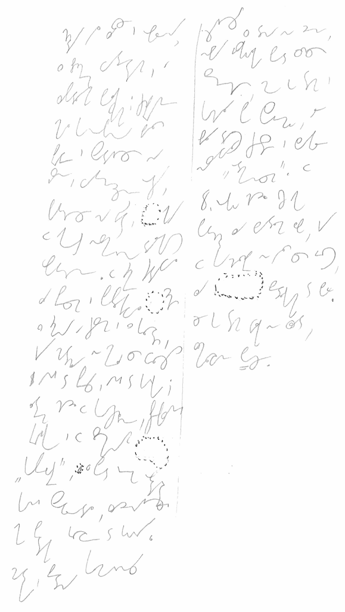

International
InternationalJanko muzykant - pierwszy akapit.
2011-02-25 | autor: flamenco108Pisane na kolanie, dlatego trochę przekrzywione. Odciąłem lewą część kartki, bo tam opierał się mój (lewy, piszący) nadgarstek. Pisane w ostatniej wersji systemu SteMi, nad którym pracuję już prawie rok.

Poniżej transkrybcja. Nie mam przy sobie oryginału, zatem w ten sposób można sprawdzić, czy zapis jest wystarczająco czytelny. Transkrybcję przedstawiam z identycznym podziałem na wiersze, jak ktoś będzie chciał, może przymierzyć jedno do drugiego i ocenić, czy system ma sens.
Chudy był zawsze i opalony,
z brzuchem wydętym, a
zapadłymi policzkami; czuprynę
miał konopną, białą
prawie i spadającą na
jasne, wytrzeszczone oczy,
patrzące na świat, jakby
w jakąś niezmierną dalekość
wpatrzone. W zimie siadywał
za piecem i popłakiwał cicho
z zimna a czasem i z głosu,
gdy matula nie mieli co cłożyć
ani do pieca, a ni do garnka;
latem chodził w koszulinie, przepasanej
krajką i w słomianym
“kapelusie”, z pod którego obdartej
kani spoglądał, zadzierając
jak ptak głowę do góry.
Matka, biedna komornica
żyjąca z dnia na dzień,
niby jaskółka pod cudzą
strzechą, może go tam i
kochała po swojemu, ale
biła dość często i zwykle
nazywała “odmieńcem”. W
8. roku codził już jako
potrzódka za bydłem lub, gdy
w chałupie nie było co jeść,
za bedłkami do boru.
Że go tam wilk nie zjadł,
zmiłowanie Boże.
Pisałem wczoraj po południu, w zasadzie pamięć krótkotrwała powinna już zaniknąć, ale podczas transkrybcji wyraźnie mi tekst stawał przed oczami. Stąd pewny odczyt rzadkich słów, jak bedłki, potrzódka, kań. Trzeba będzie poćwiczyć z tygodniowym, a może i dłuższym odstępem.
2011-02-25 autor: flamenco108